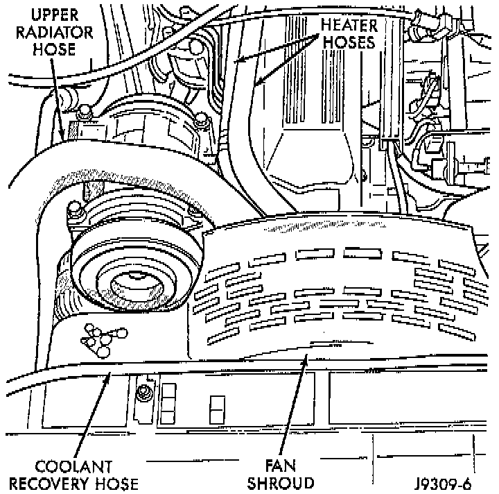
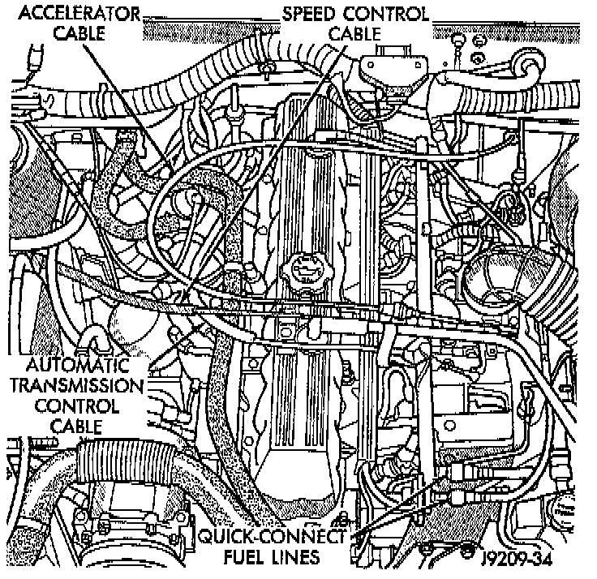
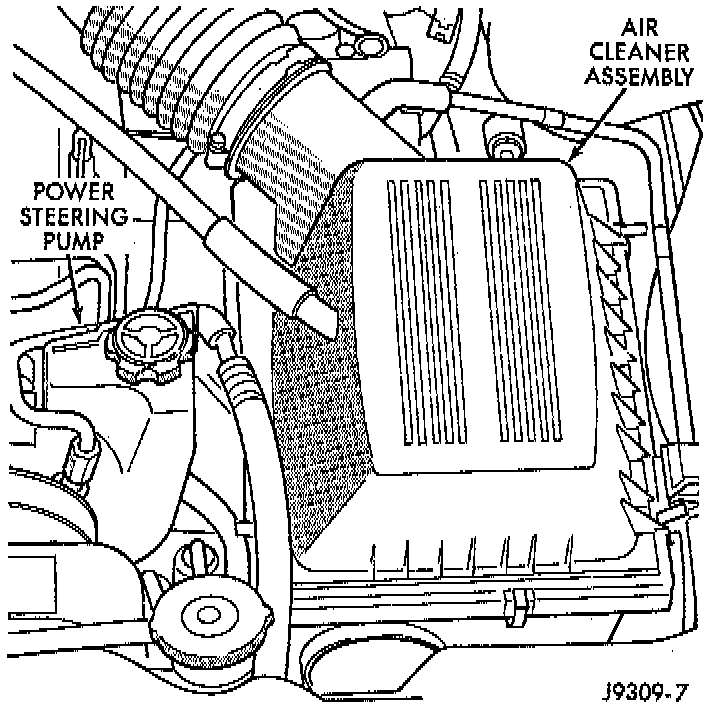

Removal
1. Disconnect the battery cables. Remove the battery.2. Mark the hinge locations on the hood panel for alignment reference during installation. Remove the engine compartment lamp. Remove the hood.
3. Remove the radiator drain cock and radiator cap to drain the coolant. DO NOT waste usable coolant. If the solution is clean, drain the coolant into a clean container for reuse.

4. Remove the upper radiator hose and coolant recovery hose.
5. Remove the lower radiator hose.
6. Remove upper radiator support retaining bolts and remove radiator support.
7. Remove the fan assembly from the water pump.
8. Remove the fan shroud.
9. Disconnect the transmission fluid cooler tubing (automatic transmission).
10. Vehicles with Air Conditioning:
a. Discharge the A/C system. Refer to Heating and Air Conditioning.
b. Remove the service valves and cap the compressor ports.
11. Remove the radiator or radiator/condenser (if equipped with A/C).
12. Disconnect the heater hoses at the engine thermostat housing and water pump.

13. Disconnect the throttle linkages.
14. Disconnect the vehicle speed control cable (if equipped).
15. Disconnect the line pressure cable (if equipped with automatic transmission).
16. Disconnect injection system wire harness connector at each injector. Mark the wires for proper installation.
17. Disconnect the distributor electrical connection and the oil pressure switch connector.
18. Disconnect the quick-connect fuel lines at the fuel rail and return line by squeezing the two retaining tabs against the fuel tube. Pull the fuel tube and retainer from the quick-connect fitting.
19. Remove the fuel line bracket from the intake manifold.
20. Remove the air cleaner assembly.
21. Remove the power brake vacuum check valve from the booster, if equipped.
22. Vehicles with Power Steering:
a. Disconnect the hoses from the fittings at the steering gear.
b. Drain the pump reservoir.
c. Cap the fittings on the hoses and steering gear to prevent foreign objects from entering the system.
23. Identify, tag and disconnect all necessary wire connectors and vacuum hoses.
24. Raise and support the vehicle.
25. Disconnect the wires from the engine starter motor solenoid.
26. Remove the engine starter motor.
27. Disconnect the oxygen sensor from the exhaust pipe.

28. Disconnect the exhaust pipe from the manifold.
29. Disconnect the vehicle speed sensor wire connection.
30. Remove the exhaust pipe support.
31. Remove the engine flywheel/converter housing access cover.
32. Vehicles with Automatic Transmission:
a. Mark the converter and drive plate location.
b. Remove the converter-to-drive plate bolts.
33. Remove the upper engine flywheel/converter housing bolts and loosen the bottom bolts.
34. Remove the engine mount cushion-to-engine compartment bracket bolts.
35. Lower the vehicle.
36. Attach a lifting device to the engine.
37. Raise the engine off the front supports.
38. Place a support or floor jack under the converter (or engine flywheel) housing.
39. Remove the remaining converter (or engine flywheel) housing bolts.
40. Lift the engine out of the engine compartment.